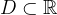
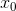
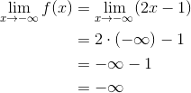
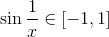
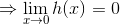
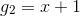

Criterii de existență a limitei unei funcții
Fie  un interval de numere reale,  un punct de acumulare al mulțimii  și (adică
și (adică  este o vecinătate a punctului ).
este o vecinătate a punctului ).
Trecerea la limită în inegalități
Teorema LF11:
Fie  două funcții, astfel încât , pentru orice , , unde este punct de acumulare al mulțimii . Atunci .
două funcții, astfel încât , pentru orice , , unde este punct de acumulare al mulțimii . Atunci .
Exemplu:
Avem că .
Inegalitatea de mai sus este adevărată pentru orice număr real deoarece, dacă trecem toți termenii într-un membru, vom obține că:
Propoziția de mai sus este adevărată și rezultă din formula de calcul prescurtat pentru și  .
.
Deci .
Considerăm funcțiile  ,
,  și .
și .
Avem că , pentru orice  . Fie
. Fie  .
.
Calculăm  și
și  .
.
.

 .
.
Se observă că:
.
Calculăm și .

Se observă că:
.
În concluzie, dacă , pentru orice , atunci , pentru orice  .
.
Criteriul cleștelui
Teorema LF9:
Fie  funcții care îndeplinesc următoarele condiții:
funcții care îndeplinesc următoarele condiții:
- , pentru orice ;
 , oricare ar fi
, oricare ar fi  .
.
Atunci  .
.
Exemplu:
Să se calculeze .
Rezolvare:
Se știe că , pentru orice .
Deci . Înmulțind această dublă inegalitate cu , care este număr pozitiv, pentru orice , obținem:
.
Fie , , și .
Avem că , oricare ar fi .
Calculăm , pentru .


.
Conform criteriului cleștelui descris de Teorema LF9 , avem că .
Criteriul majorării
Teorema LF10:
Fie funcțiile și punct de acumulare al mulțimii .
- Dacă , pentru orice și , atunci
 .
. - Dacă , pentru orice și , atunci .
- Dacă , pentru orice și , atunci .
Exemple:
- Să se calculeze .
Rezolvare:
Considerăm funcțiile ,
,
.
Se observă că:
Demonstrăm că , pentru orice .
Împărțind ultima relație cu , care este un număr pozitiv, oricare ar fi , obținem:
.
Inegalitatea de mai sus este adevărată pentru orice număr real.
În plus, avem că:
.
Conform criteriului majorării, mai precis punctul 1. al Teoremei LF10, obținem că .
- Să se arate că și .
Rezolvare:
Se știe că , pentru orice .
Adunând  la inegalitățile de mai sus, obținem:
la inegalitățile de mai sus, obținem:
.
Considerăm, pentru început, prima inegalitate, adică .
Fie , , .
Atunci avem  , pentru orice .
, pentru orice .
Calculăm .

Atunci, conform punctului 2. al criteriului majorării, adică Teorema LF10, obținem că:
În continuare, considerăm a doua inegalitate, adică .
Astfel definim funcțiile , , .
Avem , oricare ar fi .
Calculăm .
.
Rezultă, conform punctului 3. al criteriului majorării, adică Teorema LF10, că: